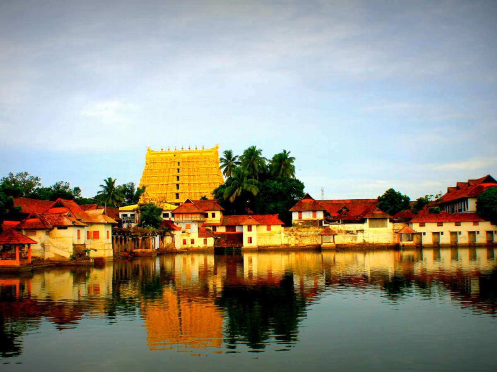

Welcome...
Explore and Enjoy...
THIRUVANANTHAPURAM
The capital city of Kerala, is an appealing blend of a strongly rooted heritage and a nostalgic colonial legacy. Built upon seven hills, this city has long since left the days when it was only used by seafaring explorers behind - today, Trivandrum is a swanky metropolis with quaint urban charm and plenty of scenic places to visit. Trivandrum offers a huge variety of sights including incredible museums, beautifully designed palaces, sacred temples and mesmerizing beaches, making the city one of the best tourist spots in South India.